JustgreenLandscaping
Garden design and landscaping in Pretoria and across Gauteng. 22 years of it.
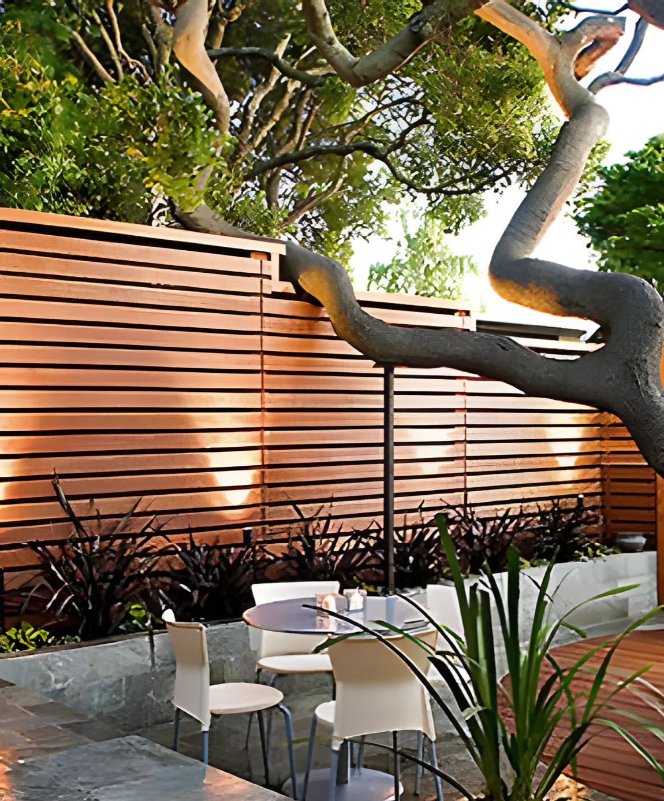
From the Green Gallery: a lit timber screen, slate paving and decking.
Not just your average landscaper
Before we plant anything, we look at your land, do a climate check and weigh up everything else, so the garden suits the site and the people who live with it.
We plan the garden, build the paving, decks, ponds and irrigation, and plant it. We work on homes and company grounds in Pretoria and Johannesburg. When we plant, we feed the new garden for free, and we stand by our promise that every client ends up 110% satisfied.
What we do
From the first drawing to the last plant in the ground. Open a line for the details, or see every service on its own page.
01Design and landscapingA plan for the whole garden, then we build it
We visit, look at the land and the climate, and design the garden around how you want to use it. Then the same team lays it out and plants it.
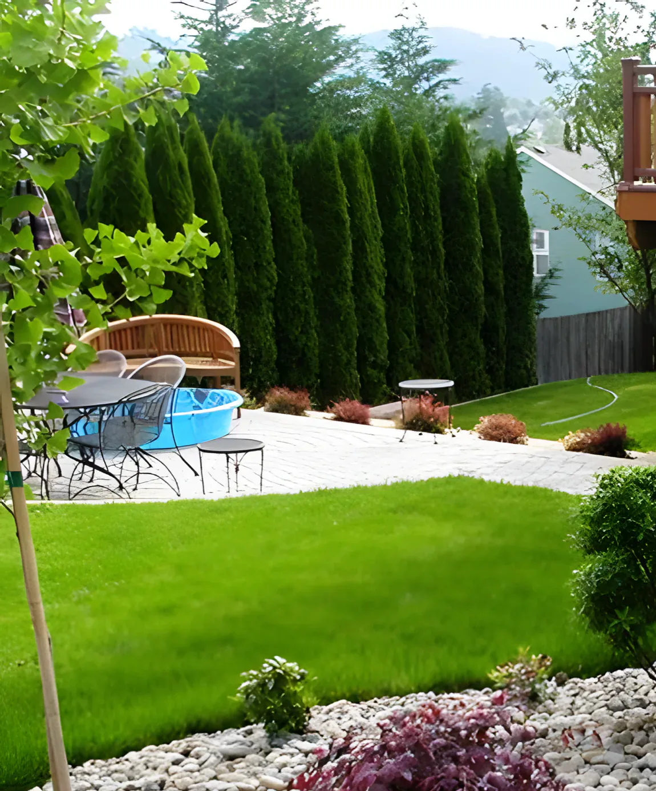
02Hardscaping and pavingPaths, steps, walls and paved areas
The built parts of the garden: paving, pathways, steps and stonework, laid so the garden around them can grow in.
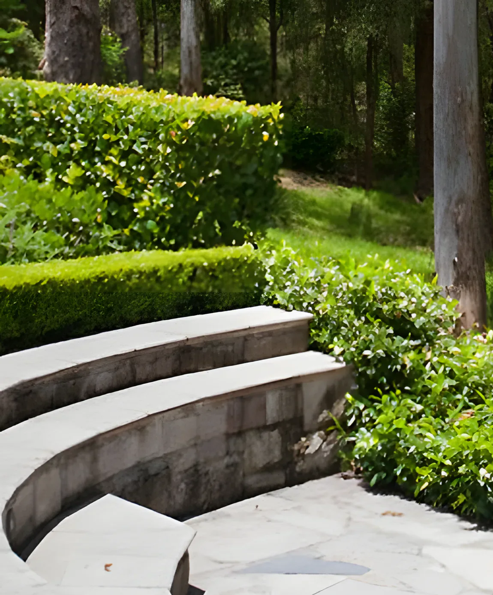
03IrrigationWatering systems for lawns and beds
Irrigation systems that put the water where the roots are, set to water at the right times of day so less is lost to the sun and wind.
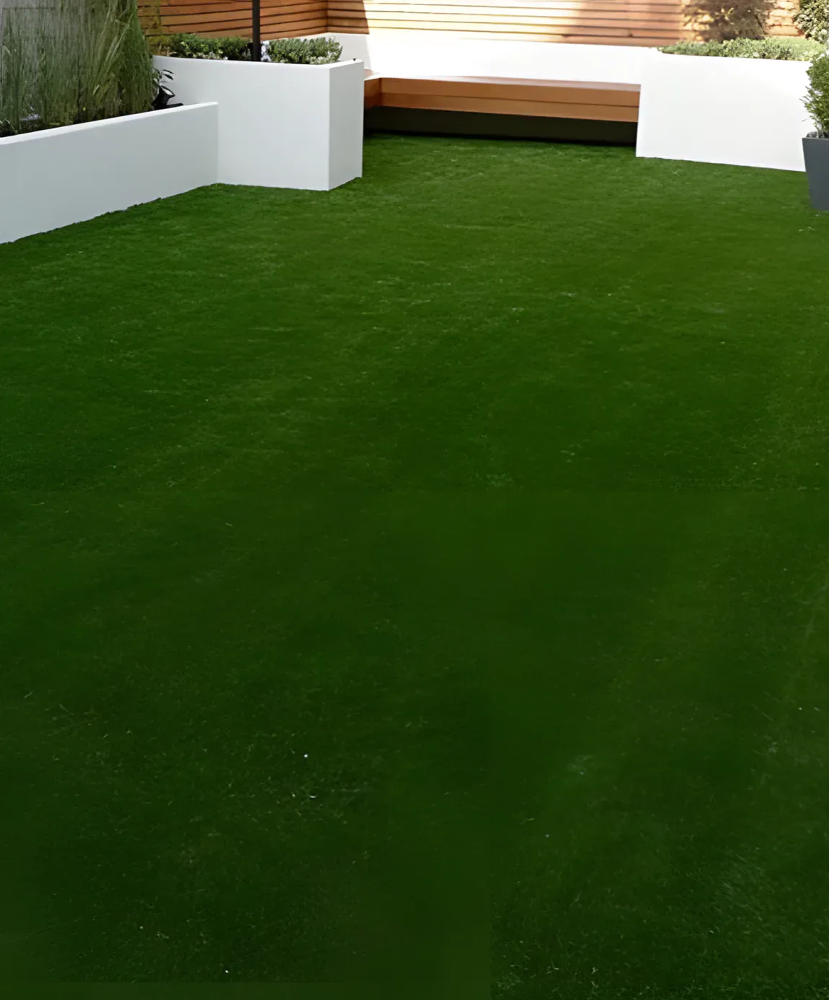
04Koi ponds and water featuresNatural and formal water features
Koi ponds, natural water features built from rock and planting, and formal water features for a cleaner, more architectural garden.
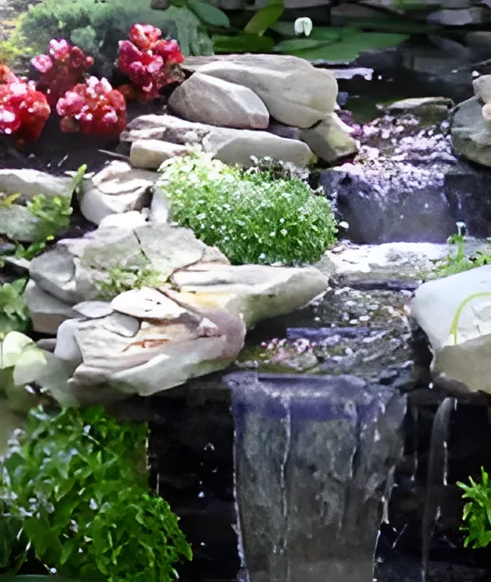
05DeckingTimber decks and platforms
Decks for sitting out, around a spa bath or under a covered patio, built to sit right with the garden around them.
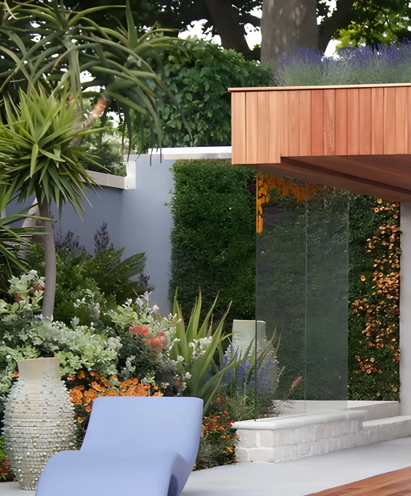
06Lighting, ornaments, trees and plantsLighting and garden electrics, garden ornamentation, tree felling, plant sourcing
- Lighting and garden electrics
- Garden ornamentation
- Tree felling
- Plant sourcing
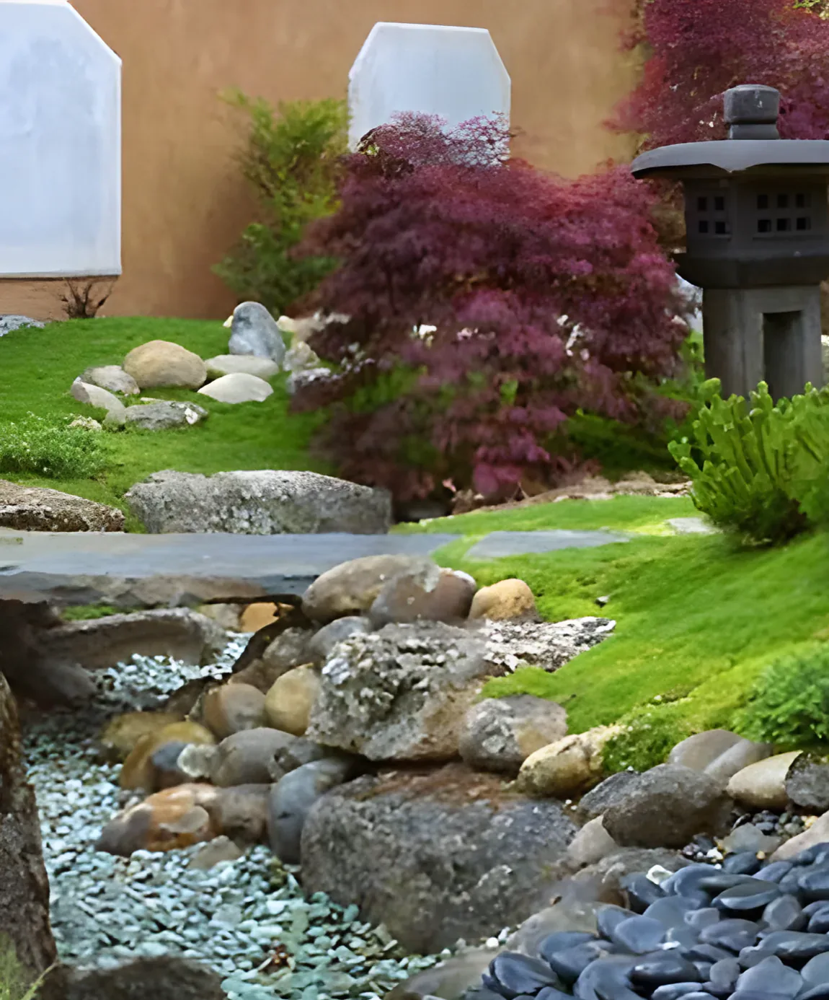
Green Gallery
A few of the gardens from our gallery. Tap a photo to see it larger.


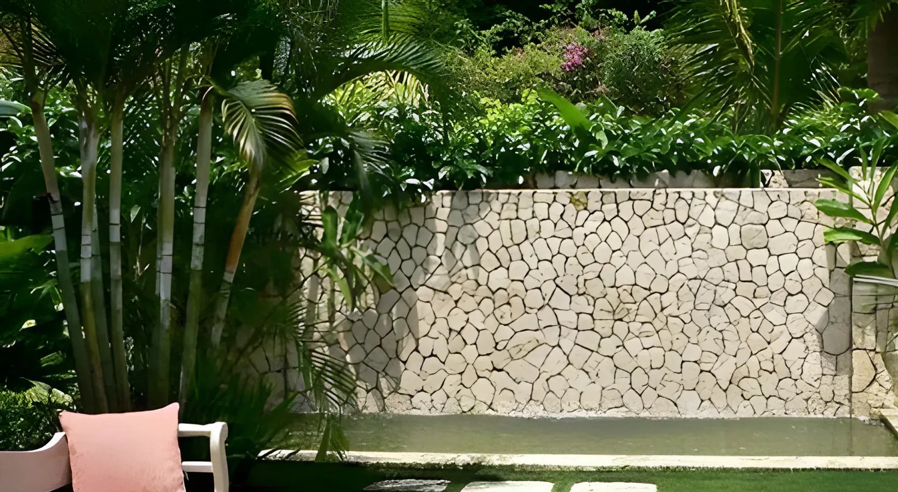

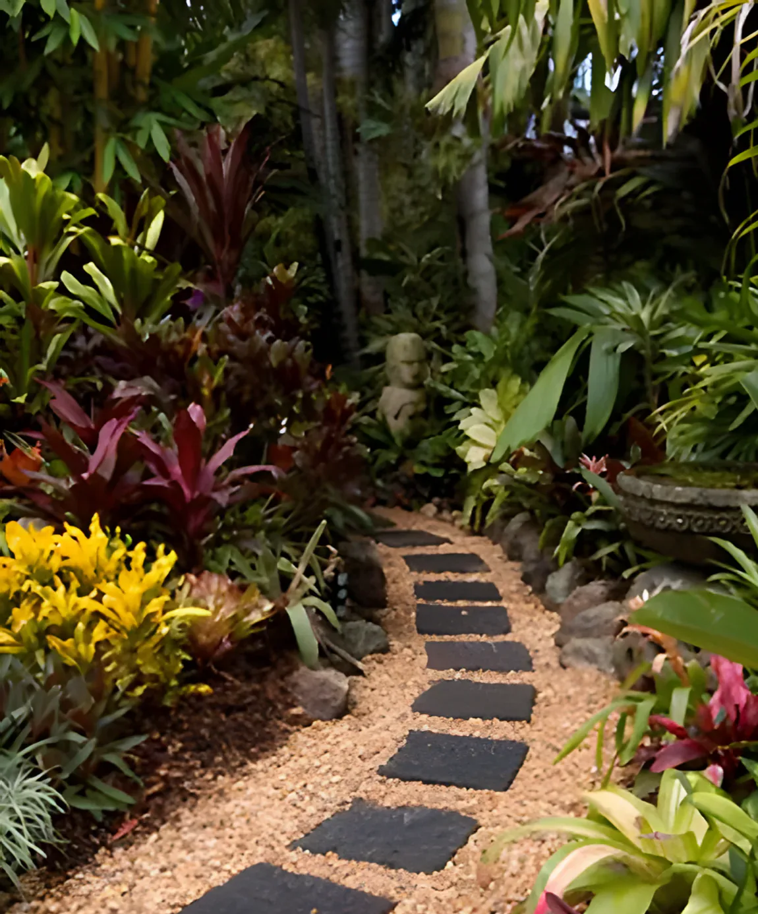


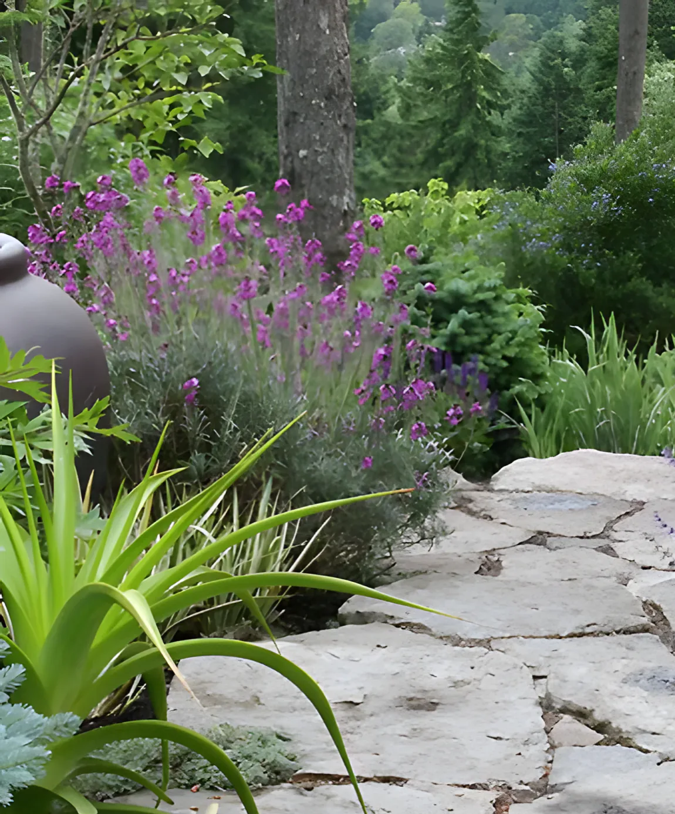

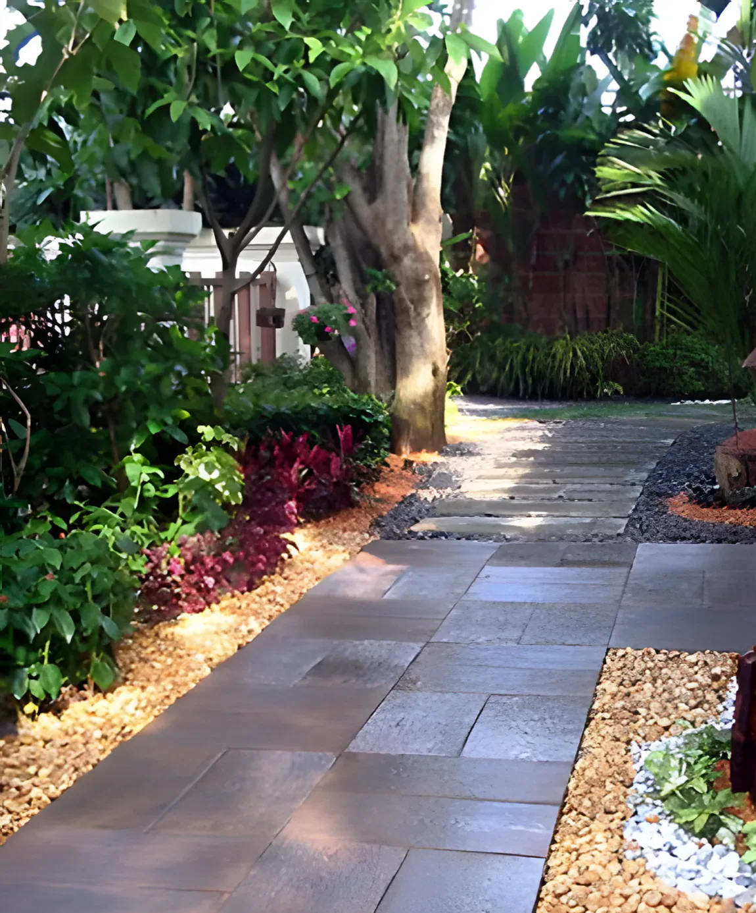
Green tips
Just Green believes in being green and helping you get green. A few of the tips we give our clients.
Water between 5 and 10 a.m., or 6 and 8 p.m.
- 5–10 a.m.
- The best time to water. In the afternoon, water is lost to evaporation and wind.
- 6–8 p.m.
- The second-best time, if the morning doesn’t work for you.
- 1 hour
- Running an irrigation system for too long wastes water: one hour can use up to 250 gallons.
- Plant native plants: they need less water and less fertiliser.
- Make your own compost from leaves, twigs, grass clippings, vegetable scraps and coffee grounds.
- Put up water butts to collect rainwater from the roof.
- Mulch in spring, after a heavy rain.
- Make sure the water goes straight to the roots, not just the surface.
- Let some vegetables flower. The flowers bring the bees, and the bees pollinate.
How a quote works
- 01
WhatsApp or call us
Tell us where the garden is and what you have in mind. 082 903 7743.
- 02
We inspect the site
To quote properly we need a full site inspection. The call-out fee for the inspection and quotation is
R450 - 03
You get the quote
Accept it, and the R450 is refunded. Top quality work at very competitive rates.
- 04
We build and plant
Planting includes extra feeding for your new garden, free.